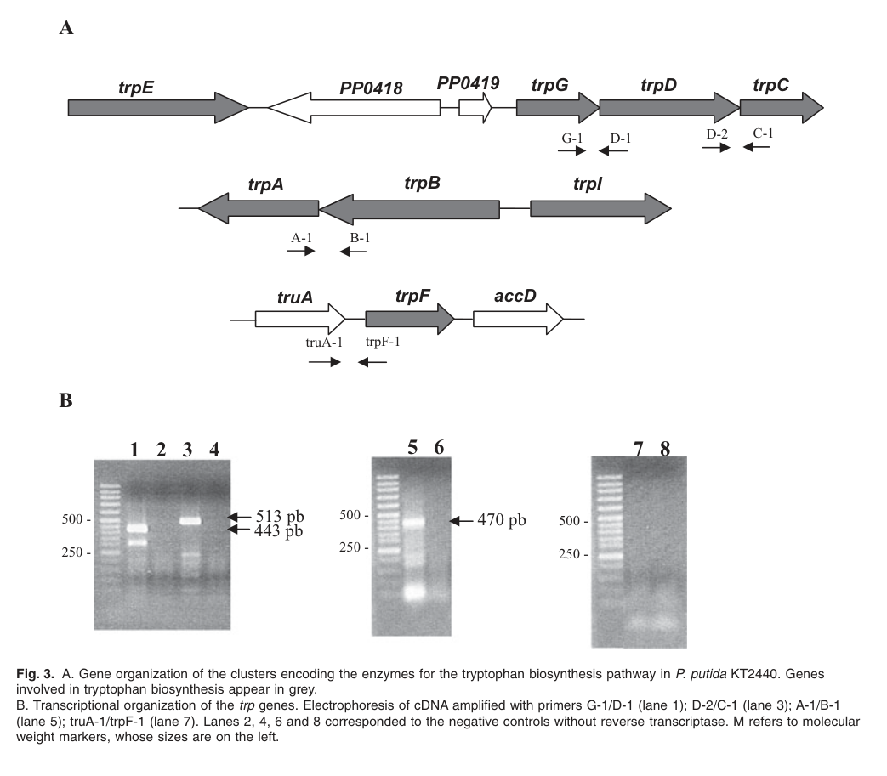

Anthranilate synthase component I (TrpE, locus PP_0417), the large alpha subunit of anthranilate synthase (EC 4.1.3.27). Together with the glutamine amidotransferase beta subunit TrpG, it forms a heterotetrameric complex that catalyzes the first committed step of L-tryptophan biosynthesis, the conversion of chorismate to anthranilate. TrpE binds chorismate and performs the amination/lyase chemistry, using ammonia supplied by TrpG from hydrolysis of L-glutamine; the products are anthranilate, pyruvate and L-glutamate. In the absence of TrpG, TrpE alone can produce anthranilate directly from chorismate when free ammonia is abundant. The enzyme requires Mg2+ and is a soluble, cytoplasmic enzyme of aromatic amino acid primary metabolism. Anthranilate synthase is typically feedback-inhibited by L-tryptophan, the pathway end product. In P. putida KT2440, loss of trpE causes tryptophan auxotrophy that is rescued by anthranilate, indole or tryptophan, confirming its placement at the anthranilate-forming step.
| GO Term | Evidence | Action | Reason |
|---|---|---|---|
|
GO:0000162
L-tryptophan biosynthetic process
|
IEA
GO_REF:0000120 |
ACCEPT |
Summary: TrpE catalyzes the first committed step (chorismate to anthranilate) of de novo L-tryptophan biosynthesis. This is the correct, well-supported biological process for this enzyme.
Reason: Anthranilate synthase component I is the entry enzyme of the tryptophan branch of aromatic amino acid biosynthesis. The IEA assignment (InterPro IPR005256, UniPathway UPA00035) is corroborated by experimental genetics in KT2440, where a trpE (PP_0417) insertion mutant is a tryptophan auxotroph rescued by anthranilate, indole or tryptophan (PMID:21261884; see file:PSEPK/trpE/trpE-deep-research-falcon.md).
|
|
GO:0004049
anthranilate synthase activity
|
IEA
GO_REF:0000120 |
ACCEPT |
Summary: TrpE is the synthase (alpha) component of anthranilate synthase (EC 4.1.3.27), catalyzing chorismate + L-glutamine to anthranilate + pyruvate + L-glutamate (RHEA:21732). This is the core molecular function and is correct.
Reason: Assigned from InterPro IPR005256, RHEA:21732 and EC 4.1.3.27, consistent with the protein family (anthranilate synthase component I), the Pfam chorismate-binding domain, and the UniProt catalytic activity annotation. GO:0004049 is the precise molecular function term.
|
The research report should be a detailed narrative explaining the function, biological processes, and localization of the gene product. Citations should be given for all claims.
You should prioritize authoritative reviews and primary scientific literature when conducting research. You can supplement
this with annotations you find in gene/protein databases, but these can be outdated or inaccurate.
We are specifically interested in the primary function of the gene - for enzymes, what reaction is catalyzed, and what is the substrate specificity? For transporters, what is the substrate? For structural proteins or adapters, what is the broader structural role? For signaling molecules, what is the role in the pathway.
We are interested in where in or outside the cell the gene product carries out its function.
We are also interested in the signaling or biochemical pathways in which the gene functions. We are less interested in broad pleiotropic effects, except where these elucidate the precise role.
Include evidence where possible. We are interested in both experimental evidence as well as inference from structure, evolution, or bioinformatic analysis. Precise studies should be prioritized over high-throughput, where available.
The symbol trpE is used across many bacteria, but in Pseudomonas putida KT2440 it specifically corresponds to PP_0417, which is annotated and experimentally supported as anthranilate synthase component I (TrpE), required for tryptophan prototrophy (molinahenares2009functionalanalysisof pages 2-4). A mini‑Tn5 insertion in PP_0417 causes a tryptophan auxotrophy, linking this KT2440 locus unambiguously to TrpE function in tryptophan biosynthesis (molinahenares2009functionalanalysisof pages 2-4).
Anthranilate synthase (EC 4.1.3.27) catalyzes the first committed step of L‑tryptophan biosynthesis: conversion of chorismate → anthranilate (parthasarathy2018athreeringcircus pages 5-6, naz2023insightintoderegulation pages 11-14). In most bacteria, AS is a two-subunit glutamine amidotransferase complex comprising:
- TrpE: the synthase/“large” (α) subunit, which binds chorismate and performs the amination/lyase chemistry leading to anthranilate and pyruvate formation (parthasarathy2018athreeringcircus pages 5-6, naz2023insightintoderegulation pages 11-14).
- TrpG: the glutaminase/“small” (β) subunit, which hydrolyzes glutamine to produce ammonia, which is then transferred to the TrpE active site (parthasarathy2018athreeringcircus pages 5-6, funke2024validationofaminodeoxychorismate pages 2-5).
Mechanistic descriptions in reviews and structural analyses support a pathway in which TrpE/TrpG carries out an amidation/lyase transformation at chorismate:
- Primary substrates/co-substrates: chorismate + glutamine (as ammonia source via TrpG) (parthasarathy2018athreeringcircus pages 5-6, funke2024validationofaminodeoxychorismate pages 2-5).
- Products: anthranilate (precursor of tryptophan), pyruvate (released from chorismate side chain), and glutamate (from glutamine hydrolysis) (parthasarathy2018athreeringcircus pages 5-6, funke2024validationofaminodeoxychorismate pages 2-5).
Two operational modes are described: a glutamine-dependent reaction requiring both subunits and an ammonia-dependent reaction in which the α subunit can use free ammonia under high ammonium availability (naz2023insightintoderegulation pages 14-15).
AS is commonly allosterically feedback-inhibited by L‑tryptophan, which reduces flux through the committed step of the pathway (niraula2025aromaticaminoacids pages 13-14, naz2023insightintoderegulation pages 11-14). Structural-level discussions place important determinants of inhibition in/near TrpE domain interfaces and binding crevices coupled to the TrpG interaction region (naz2023insightintoderegulation pages 11-14, naz2023insightintoderegulation pages 14-15).
In KT2440, TrpE (PP_0417) functions upstream of anthranilate in the (essentially one-way) chorismate→tryptophan biosynthetic route (molinahenares2009functionalanalysisof pages 1-2). This is experimentally supported by precursor feeding experiments:
- A trpE mutant did not grow on minimal medium but growth was restored by anthranilate, indole, or tryptophan supplementation (molinahenares2009functionalanalysisof pages 4-6).
This rescue pattern is consistent with TrpE acting at the anthranilate-forming step (and thus upstream of indole and tryptophan) (molinahenares2009functionalanalysisof pages 4-6).
In KT2440, tryptophan biosynthesis genes are split across loci. In the cluster containing PP_0417:
- trpE (PP_0417) is expressed as a single monocistronic transcript.
- trpG-trpD-trpC form a separate operon (tight spacing/overlaps and RT-PCR confirmation) (molinahenares2009functionalanalysisof pages 2-4).
Other trp genes are in distinct regions: trpA-trpB form an operon transcribed divergently from the repressor gene trpI, and trpF is an unlinked monocistronic unit (molinahenares2009functionalanalysisof pages 2-4, molinahenares2009functionalanalysisof pages 4-6). This gene organization is shown in the KT2440 trp gene map and RT-PCR schematic (molinahenares2009functionalanalysisof media 744c52d9).
AS activity depends on formation of a functional TrpG–TrpE complex, in which ammonia generated by TrpG is channeled to TrpE (funke2024validationofaminodeoxychorismate pages 2-5). A recent experimental validation study (in E. coli with cross-reference to Pseudomonas sequence conservation) identifies a conserved synthase aspartate (ecTrpE D367) interacting with glutaminase residues (ecTrpG Y132, S173) as critical for complex stability and function, indicating the TrpE–TrpG interface is a mechanistically and evolutionarily constrained interaction surface (funke2024validationofaminodeoxychorismate pages 2-5).
No KT2440-specific subcellular localization experiments were identified in the retrieved sources. However, anthranilate synthase is described as a soluble glutamine amidotransferase enzyme complex of primary metabolism, consistent with cytosolic localization in bacteria (parthasarathy2018athreeringcircus pages 5-6, funke2024validationofaminodeoxychorismate pages 2-5). This statement is therefore best treated as a strong inference from enzyme class/function rather than a strain-specific localization measurement.
A 2023 review focusing on deregulation of amino-acid feedback inhibition summarizes structural features and residue-level determinants for AS (TrpE/TrpG), emphasizing: (i) TrpE as the chorismate-binding/anthranilate-forming subunit; (ii) TrpG as the glutamine amidotransferase subunit; and (iii) the importance of conformational states and TrpE residues in tryptophan binding and feedback control (naz2023insightintoderegulation pages 11-14, naz2023insightintoderegulation pages 14-15). This supports current “expert consensus” that TrpE is a key lever for tuning tryptophan/anthranilate flux in strain engineering.
A 2024 Applied and Environmental Microbiology study proposes a therapeutic strategy distinct from classic active-site inhibitors: blocking conserved protein–protein interactions required for assembly of glutamine amidotransferase complexes. The authors validate that disrupting conserved TrpG–TrpE interface hot spots is strongly growth-limiting in vivo on minimal medium due to tryptophan deficiency, and note high conservation of these residues across a non-redundant set of 695 AS/ADCS sequences (funke2024validationofaminodeoxychorismate pages 2-5). This work positions AS (TrpE/TrpG) not only as a metabolic enzyme but also as a potentially “high-robustness” antimicrobial target because interface disruption affects essential complex formation (funke2024validationofaminodeoxychorismate pages 2-5).
A 2024 mSystems paper applies independent component analysis to a large RB‑TnSeq fitness compendium (179 conditions) to define functional gene modules (fModules) in KT2440. It reports a specific “tryptophan biosynthesis” fModule (9 genes) explaining 8.47% of dataset variance, indicating that tryptophan biosynthesis genes show a coherent, condition-dependent fitness signature in KT2440 (borchert2024machinelearninganalysis pages 4-6). (The excerpted text does not list whether PP_0417/trpE is among those 9 genes; gene-level membership is referenced via an external resource.)
Anthranilate is both a pathway intermediate and an industrially relevant compound. In a KT2440 engineering study, a markerless deletion of trpDC (downstream of anthranilate) enabled anthranilate accumulation, facilitated by the fact that in KT2440 (unlike E. coli) trpEG and trpDC are encoded by separate ORFs (kuepper2015metabolicengineeringof pages 2-3). The authors further used expression constructs including trpES40FG (a feedback-insensitive anthranilate synthase variant) for improved production (kuepper2015metabolicengineeringof pages 2-3).
Quantitative performance: Under tryptophan-limited fed-batch conditions, the best engineered strain achieved 1.54 ± 0.3 g/L anthranilate (11.23 mM) from glucose (kuepper2015metabolicengineeringof pages 2-3). This demonstrates that TrpE-mediated flux control at the committed step is directly exploitable for biomanufacturing.
Molina‑Henares et al. provide (i) a pathway schematic detailing the enzymatic steps from chorismate to tryptophan and (ii) a KT2440 gene-organization diagram showing trpE as a separate unit from the trpGDC operon; these figures support both the biochemical pathway position and the transcriptional organization used in this annotation (molinahenares2009functionalanalysisof media 89069567, molinahenares2009functionalanalysisof media 744c52d9).
Primary molecular function: chorismate→anthranilate synthase activity as the TrpE (anthranilate synthase component I) subunit of the TrpE/TrpG glutamine amidotransferase complex (EC 4.1.3.27), implementing the first committed step in L‑tryptophan biosynthesis (parthasarathy2018athreeringcircus pages 5-6, molinahenares2009functionalanalysisof pages 2-4).
Biological process: de novo L‑tryptophan biosynthesis from chorismate via anthranilate; genetic and feeding tests in KT2440 place trpE upstream of anthranilate/indole/tryptophan (molinahenares2009functionalanalysisof pages 4-6).
Complex/partners: requires interaction with TrpG to use glutamine as nitrogen source; the TrpG–TrpE interface is essential and evolutionarily conserved, now also investigated as a PPI-inhibitor target class (funke2024validationofaminodeoxychorismate pages 2-5).
Gene context: monocistronic trpE (PP_0417) separated from trpGDC operon; other trp genes are in additional loci (molinahenares2009functionalanalysisof pages 2-4, molinahenares2009functionalanalysisof media 744c52d9).
Applied relevance: TrpE is a major control node for redirecting chorismate flux to anthranilate in P. putida KT2440, enabling gram‑per‑liter anthranilate production in engineered strains (kuepper2015metabolicengineeringof pages 2-3).
| Category | Key points | Best supporting citations (pqac IDs) | URLs / publication dates |
|---|---|---|---|
| Identity | UniProt Q88QS1 corresponds to trpE / PP_0417 in Pseudomonas putida KT2440 and encodes anthranilate synthase component I (large/synthase subunit) in tryptophan biosynthesis; KT2440 studies explicitly annotate PP0417 as TrpE and show loss of function causes tryptophan auxotrophy. | (molinahenares2009functionalanalysisof pages 2-4, molinahenares2009functionalanalysisof pages 1-2) | Molina-Henares et al., Microbial Biotechnology (Dec 2009): https://doi.org/10.1111/j.1751-7915.2008.00062.x |
| Reaction | TrpE is the synthase/alpha component of anthranilate synthase (EC 4.1.3.27), catalyzing the first committed step of L-tryptophan biosynthesis by converting chorismate to anthranilate in concert with TrpG. Mechanistically, TrpE forms/acts on the aminated chorismate intermediate and supports pyruvate elimination. | (parthasarathy2018athreeringcircus pages 5-6, naz2023insightintoderegulation pages 11-14) | Parthasarathy et al., Frontiers in Molecular Biosciences (Apr 2018): https://doi.org/10.3389/fmolb.2018.00029; Naz et al., Microbial Cell Factories (Aug 2023): https://doi.org/10.1186/s12934-023-02178-z |
| Substrates / products | Canonical glutamine-dependent reaction uses chorismate plus ammonia derived from glutamine; products are anthranilate, pyruvate, and glutamate. Under some conditions, the alpha subunit can use free ammonia instead of glutamine-derived ammonia. | (parthasarathy2018athreeringcircus pages 5-6, naz2023insightintoderegulation pages 14-15) | Parthasarathy et al. (Apr 2018): https://doi.org/10.3389/fmolb.2018.00029; Naz et al. (Aug 2023): https://doi.org/10.1186/s12934-023-02178-z |
| Pathway role | In KT2440, trpE functions at or before anthranilate formation in the one-way pathway from chorismate to tryptophan; precursor-feeding experiments showed trpE mutants are rescued by anthranilate, indole, or tryptophan, placing TrpE upstream of these intermediates. | (molinahenares2009functionalanalysisof pages 4-6, molinahenares2009functionalanalysisof pages 1-2, molinahenares2009functionalanalysisof media 89069567) | Molina-Henares et al. (Dec 2009): https://doi.org/10.1111/j.1751-7915.2008.00062.x |
| Complex / partner | TrpE acts with TrpG (anthranilate synthase component II / glutamine amidotransferase) as a two-subunit enzyme, commonly organized as αβ or α2β2 assemblies; TrpG supplies ammonia from glutamine to the TrpE active site. Conserved subunit interfaces are essential for activity. | (parthasarathy2018athreeringcircus pages 5-6, naz2023insightintoderegulation pages 11-14, funke2024validationofaminodeoxychorismate pages 1-2, funke2024validationofaminodeoxychorismate pages 2-5) | Parthasarathy et al. (Apr 2018): https://doi.org/10.3389/fmolb.2018.00029; Naz et al. (Aug 2023): https://doi.org/10.1186/s12934-023-02178-z; Funke et al., Applied and Environmental Microbiology (May 2024): https://doi.org/10.1128/aem.00572-24 |
| Regulation | Anthranilate synthase is feedback-inhibited by L-tryptophan. Structural analyses place inhibitory residues in/near the chorismate-binding domain and domain interfaces; elevated Trp prevents the conformational state needed for efficient catalysis/ammonia transfer. Feedback-insensitive trpE alleles are widely exploited in engineering. | (niraula2025aromaticaminoacids pages 13-14, naz2023insightintoderegulation pages 11-14, naz2023insightintoderegulation pages 14-15, ramosvaldovinos2024optimizingfermentationstrategies pages 7-8) | Niraula et al. (Jan 2025): https://doi.org/10.3390/biotech14010006; Naz et al. (Aug 2023): https://doi.org/10.1186/s12934-023-02178-z; Ramos-Valdovinos & Martínez-Antonio, Processes (Nov 2024): https://doi.org/10.3390/pr12112422 |
| Gene organization | In P. putida KT2440, trpE is a monocistronic transcription unit separate from the trpGDC operon; trp genes are split across multiple chromosomal loci, with trpBA and trpI elsewhere. Engineering literature also notes trpEG and trpDC are encoded by separate open reading frames in KT2440. | (molinahenares2009functionalanalysisof pages 4-6, molinahenares2009functionalanalysisof pages 2-4, kuepper2015metabolicengineeringof pages 2-3, molinahenares2009functionalanalysisof media 89069567) | Molina-Henares et al. (Dec 2009): https://doi.org/10.1111/j.1751-7915.2008.00062.x; Kuepper et al., Frontiers in Microbiology (Nov 2015): https://doi.org/10.3389/fmicb.2015.01310 |
| Localization | TrpE is a cytosolic enzyme inferred from its role in soluble primary metabolism and from its bacterial anthranilate synthase family organization; no evidence in the gathered KT2440 sources suggests membrane or extracellular localization. | (parthasarathy2018athreeringcircus pages 5-6, naz2023insightintoderegulation pages 11-14) | Parthasarathy et al. (Apr 2018): https://doi.org/10.3389/fmolb.2018.00029; Naz et al. (Aug 2023): https://doi.org/10.1186/s12934-023-02178-z |
| Phenotypes | A mini-Tn5 insertion in trpE produced a tryptophan auxotroph in KT2440. Rescue by anthranilate/indole/tryptophan demonstrates specific impairment of the first committed step of Trp biosynthesis rather than a broad growth defect. | (molinahenares2009functionalanalysisof pages 2-4, molinahenares2009functionalanalysisof pages 1-2) | Molina-Henares et al. (Dec 2009): https://doi.org/10.1111/j.1751-7915.2008.00062.x |
| Applications / engineering | KT2440 has been engineered to accumulate anthranilate by deleting trpDC and overexpressing feedback-insensitive trpE/trpG variants. In fed-batch, the best reported strain reached 1.54 ± 0.3 g/L anthranilate (11.23 mM) from glucose. TrpE is thus a practical flux-control node for aromatic biomanufacturing. | (kuepper2015metabolicengineeringof pages 2-3) | Kuepper et al., Frontiers in Microbiology (Nov 2015): https://doi.org/10.3389/fmicb.2015.01310 |
| Recent developments (2023–2024) | Recent work emphasizes (i) structure-guided deregulation of anthranilate synthase feedback inhibition, including residue-level analysis of Trp and chorismate binding; (ii) PPI-targeted antibiotic strategies aimed at the conserved TrpG–TrpE interface; and (iii) renewed interest in aromatic-pathway rewiring for high-yield production platforms. | (naz2023insightintoderegulation pages 11-14, naz2023insightintoderegulation pages 14-15, funke2024validationofaminodeoxychorismate pages 1-2, funke2024validationofaminodeoxychorismate pages 2-5) | Naz et al. (Aug 2023): https://doi.org/10.1186/s12934-023-02178-z; Funke et al. (May 2024): https://doi.org/10.1128/aem.00572-24 |
| Statistics / data | Quantitative findings include: 1.54 ± 0.3 g/L (11.23 mM) anthranilate in engineered KT2440; Funke et al. analyzed conservation across ~695 bacterial AS/ADCS sequences to identify interface hotspots; Molina-Henares et al. isolated four tryptophan auxotrophs in KT2440 mutagenesis, including a trpE mutant. | (kuepper2015metabolicengineeringof pages 2-3, funke2024validationofaminodeoxychorismate pages 2-5, molinahenares2009functionalanalysisof pages 1-2) | Kuepper et al. (Nov 2015): https://doi.org/10.3389/fmicb.2015.01310; Funke et al. (May 2024): https://doi.org/10.1128/aem.00572-24; Molina-Henares et al. (Dec 2009): https://doi.org/10.1111/j.1751-7915.2008.00062.x |
Table: This table summarizes the validated functional annotation of Pseudomonas putida KT2440 trpE (UniProt Q88QS1 / PP_0417), covering biochemical function, gene organization, phenotypes, engineering uses, and recent 2023–2024 developments with direct context-ID citations.
References
(molinahenares2009functionalanalysisof pages 2-4): M. A. Molina-Henares, Adela García‐Salamanca, A. Molina-Henares, J. de la Torre, M. C. Herrera, J. Ramos, and E. Duque. Functional analysis of aromatic biosynthetic pathways in pseudomonas putida kt2440. Microbial biotechnology, 2:91-100, Dec 2009. URL: https://doi.org/10.1111/j.1751-7915.2008.00062.x, doi:10.1111/j.1751-7915.2008.00062.x. This article has 32 citations and is from a peer-reviewed journal.
(parthasarathy2018athreeringcircus pages 5-6): Anutthaman Parthasarathy, Penelope J. Cross, Renwick C. J. Dobson, Lily E. Adams, Michael A. Savka, and André O. Hudson. A three-ring circus: metabolism of the three proteogenic aromatic amino acids and their role in the health of plants and animals. Frontiers in Molecular Biosciences, Apr 2018. URL: https://doi.org/10.3389/fmolb.2018.00029, doi:10.3389/fmolb.2018.00029. This article has 423 citations.
(naz2023insightintoderegulation pages 11-14): Sadia Naz, Pi Liu, Umar Farooq, and Hongwu Ma. Insight into de-regulation of amino acid feedback inhibition: a focus on structure analysis method. Microbial Cell Factories, Aug 2023. URL: https://doi.org/10.1186/s12934-023-02178-z, doi:10.1186/s12934-023-02178-z. This article has 23 citations and is from a peer-reviewed journal.
(funke2024validationofaminodeoxychorismate pages 2-5): Franziska Jasmin Funke, Sandra Schlee, and Reinhard Sterner. Validation of aminodeoxychorismate synthase and anthranilate synthase as novel targets for bispecific antibiotics inhibiting conserved protein-protein interactions. Applied and Environmental Microbiology, May 2024. URL: https://doi.org/10.1128/aem.00572-24, doi:10.1128/aem.00572-24. This article has 5 citations and is from a peer-reviewed journal.
(naz2023insightintoderegulation pages 14-15): Sadia Naz, Pi Liu, Umar Farooq, and Hongwu Ma. Insight into de-regulation of amino acid feedback inhibition: a focus on structure analysis method. Microbial Cell Factories, Aug 2023. URL: https://doi.org/10.1186/s12934-023-02178-z, doi:10.1186/s12934-023-02178-z. This article has 23 citations and is from a peer-reviewed journal.
(niraula2025aromaticaminoacids pages 13-14): Archana Niraula, Amir Danesh, Natacha Merindol, Fatma Meddeb-Mouelhi, and Isabel Desgagné-Penix. Aromatic amino acids: exploring microalgae as a potential biofactory. BioTech, 14:6, Jan 2025. URL: https://doi.org/10.3390/biotech14010006, doi:10.3390/biotech14010006. This article has 9 citations.
(molinahenares2009functionalanalysisof pages 1-2): M. A. Molina-Henares, Adela García‐Salamanca, A. Molina-Henares, J. de la Torre, M. C. Herrera, J. Ramos, and E. Duque. Functional analysis of aromatic biosynthetic pathways in pseudomonas putida kt2440. Microbial biotechnology, 2:91-100, Dec 2009. URL: https://doi.org/10.1111/j.1751-7915.2008.00062.x, doi:10.1111/j.1751-7915.2008.00062.x. This article has 32 citations and is from a peer-reviewed journal.
(molinahenares2009functionalanalysisof pages 4-6): M. A. Molina-Henares, Adela García‐Salamanca, A. Molina-Henares, J. de la Torre, M. C. Herrera, J. Ramos, and E. Duque. Functional analysis of aromatic biosynthetic pathways in pseudomonas putida kt2440. Microbial biotechnology, 2:91-100, Dec 2009. URL: https://doi.org/10.1111/j.1751-7915.2008.00062.x, doi:10.1111/j.1751-7915.2008.00062.x. This article has 32 citations and is from a peer-reviewed journal.
(molinahenares2009functionalanalysisof media 744c52d9): M. A. Molina-Henares, Adela García‐Salamanca, A. Molina-Henares, J. de la Torre, M. C. Herrera, J. Ramos, and E. Duque. Functional analysis of aromatic biosynthetic pathways in pseudomonas putida kt2440. Microbial biotechnology, 2:91-100, Dec 2009. URL: https://doi.org/10.1111/j.1751-7915.2008.00062.x, doi:10.1111/j.1751-7915.2008.00062.x. This article has 32 citations and is from a peer-reviewed journal.
(borchert2024machinelearninganalysis pages 4-6): Andrew J. Borchert, Alissa C. Bleem, Hyun Gyu Lim, Kevin Rychel, Keven D. Dooley, Zoe A. Kellermyer, Tracy L. Hodges, Bernhard O. Palsson, and Gregg T. Beckham. Machine learning analysis of rb-tnseq fitness data predicts functional gene modules in pseudomonas putida kt2440. Mar 2024. URL: https://doi.org/10.1128/msystems.00942-23, doi:10.1128/msystems.00942-23. This article has 13 citations and is from a peer-reviewed journal.
(kuepper2015metabolicengineeringof pages 2-3): Jannis Kuepper, Jasmin Dickler, Michael Biggel, Swantje Behnken, Gernot Jäger, Nick Wierckx, and Lars M. Blank. Metabolic engineering of pseudomonas putida kt2440 to produce anthranilate from glucose. Frontiers in Microbiology, Nov 2015. URL: https://doi.org/10.3389/fmicb.2015.01310, doi:10.3389/fmicb.2015.01310. This article has 66 citations and is from a peer-reviewed journal.
(molinahenares2009functionalanalysisof media 89069567): M. A. Molina-Henares, Adela García‐Salamanca, A. Molina-Henares, J. de la Torre, M. C. Herrera, J. Ramos, and E. Duque. Functional analysis of aromatic biosynthetic pathways in pseudomonas putida kt2440. Microbial biotechnology, 2:91-100, Dec 2009. URL: https://doi.org/10.1111/j.1751-7915.2008.00062.x, doi:10.1111/j.1751-7915.2008.00062.x. This article has 32 citations and is from a peer-reviewed journal.
(funke2024validationofaminodeoxychorismate pages 1-2): Franziska Jasmin Funke, Sandra Schlee, and Reinhard Sterner. Validation of aminodeoxychorismate synthase and anthranilate synthase as novel targets for bispecific antibiotics inhibiting conserved protein-protein interactions. Applied and Environmental Microbiology, May 2024. URL: https://doi.org/10.1128/aem.00572-24, doi:10.1128/aem.00572-24. This article has 5 citations and is from a peer-reviewed journal.
(ramosvaldovinos2024optimizingfermentationstrategies pages 7-8): Miguel Angel Ramos-Valdovinos and Agustino Martínez-Antonio. Optimizing fermentation strategies for enhanced tryptophan production in escherichia coli: integrating genetic and environmental controls for industrial applications. Processes, Nov 2024. URL: https://doi.org/10.3390/pr12112422, doi:10.3390/pr12112422. This article has 10 citations.

id: Q88QS1
gene_symbol: trpE
product_type: PROTEIN
status: DRAFT
taxon:
id: NCBITaxon:160488
label: Pseudomonas putida (strain ATCC 47054 / DSM 6125 / CFBP 8728 / NCIMB 11950 / KT2440)
description: >-
Anthranilate synthase component I (TrpE, locus PP_0417), the large alpha
subunit of anthranilate synthase (EC 4.1.3.27). Together with the glutamine
amidotransferase beta subunit TrpG, it forms a heterotetrameric complex that
catalyzes the first committed step of L-tryptophan biosynthesis, the conversion
of chorismate to anthranilate. TrpE binds chorismate and performs the
amination/lyase chemistry, using ammonia supplied by TrpG from hydrolysis of
L-glutamine; the products are anthranilate, pyruvate and L-glutamate. In the
absence of TrpG, TrpE alone can produce anthranilate directly from chorismate
when free ammonia is abundant. The enzyme requires Mg2+ and is a soluble,
cytoplasmic enzyme of aromatic amino acid primary metabolism. Anthranilate
synthase is typically feedback-inhibited by L-tryptophan, the pathway end
product. In P. putida KT2440, loss of trpE causes tryptophan auxotrophy that is
rescued by anthranilate, indole or tryptophan, confirming its placement at the
anthranilate-forming step.
existing_annotations:
- term:
id: GO:0000162
label: L-tryptophan biosynthetic process
evidence_type: IEA
original_reference_id: GO_REF:0000120
qualifier: involved_in
review:
summary: >-
TrpE catalyzes the first committed step (chorismate to anthranilate) of de
novo L-tryptophan biosynthesis. This is the correct, well-supported
biological process for this enzyme.
action: ACCEPT
reason: >-
Anthranilate synthase component I is the entry enzyme of the tryptophan
branch of aromatic amino acid biosynthesis. The IEA assignment (InterPro
IPR005256, UniPathway UPA00035) is corroborated by experimental genetics in
KT2440, where a trpE (PP_0417) insertion mutant is a tryptophan auxotroph
rescued by anthranilate, indole or tryptophan (PMID:21261884; see
file:PSEPK/trpE/trpE-deep-research-falcon.md).
- term:
id: GO:0004049
label: anthranilate synthase activity
evidence_type: IEA
original_reference_id: GO_REF:0000120
qualifier: enables
review:
summary: >-
TrpE is the synthase (alpha) component of anthranilate synthase
(EC 4.1.3.27), catalyzing chorismate + L-glutamine to anthranilate +
pyruvate + L-glutamate (RHEA:21732). This is the core molecular function
and is correct.
action: ACCEPT
reason: >-
Assigned from InterPro IPR005256, RHEA:21732 and EC 4.1.3.27, consistent
with the protein family (anthranilate synthase component I), the Pfam
chorismate-binding domain, and the UniProt catalytic activity annotation.
GO:0004049 is the precise molecular function term.
core_functions:
- description: >-
Anthranilate synthase component I activity - binds chorismate and, using
ammonia supplied by the TrpG glutaminase subunit (or free ammonia at high
concentration), converts chorismate to anthranilate with release of pyruvate,
the first committed step of L-tryptophan biosynthesis.
molecular_function:
id: GO:0004049
label: anthranilate synthase activity
supported_by:
- reference_id: GO_REF:0000120
supporting_text: >-
Anthranilate synthase component 1; EC 4.1.3.27; Reaction=chorismate +
L-glutamine = anthranilate + pyruvate + L-glutamate + H(+); Rhea:RHEA:21732.
full_text_unavailable: true
- reference_id: PMID:21261884
supporting_text: >-
A trpE mutant did not grow on minimal medium but growth was restored by
anthranilate, indole, or tryptophan supplementation, placing TrpE
(PP_0417) at the anthranilate-forming step of tryptophan biosynthesis.
full_text_unavailable: true
directly_involved_in:
- id: GO:0000162
label: L-tryptophan biosynthetic process
substrates:
- id: CHEBI:29748
label: chorismate
- id: CHEBI:58359
label: L-glutamine
references:
- id: GO_REF:0000120
title: Combined Automated Annotation using Multiple IEA Methods
findings: []
- id: PMID:21261884
title: Functional analysis of aromatic biosynthetic pathways in Pseudomonas putida KT2440
findings:
- statement: >-
A mini-Tn5 insertion in trpE (PP_0417) produces a tryptophan auxotroph in
KT2440 rescued by anthranilate, indole or tryptophan, placing TrpE at the
anthranilate-forming step of tryptophan biosynthesis; trpE is a
monocistronic unit separate from the trpGDC operon.
supporting_text: >-
A trpE mutant did not grow on minimal medium but growth was restored by
anthranilate, indole, or tryptophan supplementation.
reference_review:
relevance: HIGH
correctness: VERIFIED
review_notes: >-
PubMed-verified: PMID:21261884 = Molina-Henares et al., Microbial
Biotechnology 2009, 2(1):91-100, doi:10.1111/j.1751-7915.2008.00062.x. The
abstract confirms KT2440 has a single chorismate-to-tryptophan pathway with
trpE as a separate transcriptional unit, isolated via mini-Tn5 auxotroph
screening; supports the tryptophan-auxotrophy phenotype for PP_0417/trpE.
proposed_new_terms: []
suggested_questions: []
suggested_experiments: []
{kind=link}